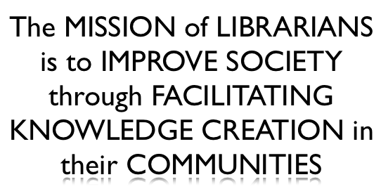

The Origin of the Future is in the Present
Library Technology Conference, March 19, 2014
Mita Williams
User Experience Librarian, University of Windsor
new jack librarian
@copystar
I would like to begin at the beginning. I would like to begin with an origin story.
Let's begin with an origin story
Athena springing from the head of Zeus
Origin stories can be found in comic books. Even those of us don’t regularly read comics already seem to know the backstory of how Batman, Spiderman, and Superman came to be. Origin stories, of course, also hold an important place in our mythologies: Here is Athena, goddess of wisdom and of warfare, springing, fully formed and armored, from the head of Zeus.
Every start-up has an origin story
Origin stories are still popular today. Almost every tech start up seems to have a one. HP’s humble beginnings in a small garage. Twitter’s cultural tipping point during South by Southwest in 2007. Facebook’s turbulent origins that were worthy of a movie.
Origin stories as a path to a profession or pursuit
Women in technology have a practice of sharing their origin stories. Sumana Harihareswara shared hers at the OSBridge Conference some years ago where she described how she became involved in community organizing around open source software.
Sharing an origin story, such as the moment you found wanting to know more about computer programming, is useful for several reasons. First, it reminds us that there are many origin stories out there and that there is not one set path that we must follow to a destination. And origin stories remind us - that it is often moments of enchantment or illumination that first capture our imagination and then our attention and *that* is what sets us on a path to a profession or lifetime pursuit.
I would like you to take a moment to think about your own origin story when it comes to libraries. And I give you permission to ask other people about their origin story over the course of the 2014 Library Technology Conference, perhaps use as an icebreaker if you find yourself beside someone you don’t know.
I’m not going to start this talk by telling you my library origin story, I’m going to share with you another woman’s . See if you can recognize it. And no googling as this text is pretty much taken directly from the biography that I found on her official website.
A library origin story. But whose?
......was born in McMinnville, Oregon, and, until she was old enough to attend school, lived on a farm in a town so small it had no library. Her mother arranged with the State Library to have books sent to her town and acted as librarian in a lodge room upstairs over a bank. She loved to read books but when the family moved to Portland, she found herself in the school's low reading circle, an experience that has gave her sympathy with struggling readers.
This woman... ...was born in McMinnville, Oregon, and, until she was old enough to attend school, lived on a farm in a town so small it had no library. Her mother arranged with the State Library to have books sent to her town and acted as librarian in a lodge room upstairs over a bank. She loved to read books but when the family moved to Portland, she found herself in the school's low reading circle, an experience that has gave her sympathy with struggling readers.
... By third grade she had conquered reading and spent much of her childhood either with books or on her way to and from the public library. The school librarian once suggested that she should write for boys and girls when she grew up. The idea appealed to her, and she decided that someday she would write the books that she longed to read but was unable to find on the library shelves: funny stories about her neighborhood and the sort of children she knew.
By third grade she had conquered reading and spent much of her childhood either with books or on her way to and from the public library. The school librarian once suggested that she should write for boys and girls when she grew up. The idea appealed to her, and she decided that someday she would write the books that she longed to read but was unable to find on the library shelves: funny stories about her neighborhood and the sort of children she knew.
And so Ramona Quimby, Henry Huggins, Ellen Tebbits, and her other beloved characters were born.
And so Ramona Quimby, Henry Huggins, Ellen Tebbits, and her other beloved characters were born.
A life defined by libraries
If you haven’t guessed it already, that was the official biography of children’s author Beverly Cleary, -- a life that was formed and defined by libraries.
I have friends who grew up with not much. They’ve told me that, like for Beverly Clearly, the library was an oasis in their childhood. It was an abundance of riches that could be drawn from time and time again.
Libraries as abundance
Libraries were and remain a place of generosity. For libraries are not just a place for those who have an appetite for reading that outpaces what they can afford but remain a refuge for students, for the elderly, for the disenfranchised, *for anyone* who needs to come in from the rain and find a place to sit down.
I’ve been asked to open today’s conference with a look forward to the future of libraries. I’ve told stories about the Future of Libraries before and it’s always been my best received work. But as we know from the small print of so many investment commercials, past performance cannot be considered an indicator of future performance.
And that is the challenge of what we have, collectively, together before us: How can we make a future of libraries that is as important and as generous as our past?
What will be the future of the library if the Internet continues to make text no longer scarce and makes our abundance, no longer impressive? And what will be the future of our world at large? Will our children live in a world of scarcity or abundance? Endless austerity or the dawn of post-scarcity?
Academic Library of the Future?
Will the academic library of the future look like this: a study hall with wifi?
Public Library of the Future?
This is how the residents of Præstø Denmark get into their library. They have to swipe their social security card for entrance. And they have to do so because there is no library staff in their completely “open service” library. As the essay that this image links to suggests, this library is the surveillance state brought to its logical conclusion.
If these two scenarios are our future, what will form the library origin stories of our future readers, our future advocates, and our future colleagues?
In my previous talks, I have framed the Future of Libraries through the telling of five different stories. The premise is that these investigations are not unlike the story of the five blind men and the elephant: each describe the shape of something emerging in the present, but the whole remains elusive. And I have two disclaimers: I am not a futurist, nor do I suggest that these possible futures are inevitable.
The inside-out library
Google > Wikipedia > References
Becoming An Archive Warrior
Occupy the Storefront
Viva Les Ebooks Libre
In my 2013 The Future of the Library (And How to Stop It) Talk: I told these five stories. They are stories that describe the strange ways libraries have been turned inside out. About how our collections have gone online and our buildings are now designed to collect people. I told stories of how libraries are now created by activists and artists as community building exercises. And I told how we, as librarians, can help in these efforts by providing linked open data as well as the doing the work of digitizing and capturing the digital human record.
Today's Stories about The Future of the Library
1000 True Fans
Making a Mesh of Things
Reveal Coders
A book is for re-use
WTFM
It is 2014 and I now have five new stories to tell you.
1000 True Fans Making a Mesh of Things
Reveal Coders
A book is for re-use
WTFM
Let’s begin with 1000 True Fans.
The Central Library of Amsterdam
I began this talk with a story of an author so shaped by libraries that it defined her life and work.
Now let me tell you the story of another author. He wrote his last novel here, in the Central Library of Amsterdam. I don’t know what effect libraries had on him when he was younger, but I do know that is a strong advocate of libraries today.
We know many other authors who champion libraries and defend them when necessary. Some that come to mind include Cory Doctorow, Zadie Smith, Neil Gaiman, and Lemony Snicket.
Many authors - especially those who write for children and young adults - recognize how valuable the work of connecting books with readers that is done by librarians. They value the school and public librarians who create the space - both physical and intellectual - where the reading choices of young people are taken seriously.
But while many authors may love libraries, the organizations that represent their interests like the Authors Guild and their respective publishers have a much more adversarial relationship with us, as institutions.
There are several reasons for this, but I think it’s safe to say that the situation has escalated largely because creative work remains time-consuming and emotionally expensive to produce while advances in technology has made such work very easy and almost free to reproduce.
This is the response we get
When librarians ask how can we preserve ebooks and make them available in our collections for future generations, the answer we frequently receive in return is, How can do you expect a creative person to make a living these days?
Keeping in mind that this doesn’t answer the question we asked nor is it the question that we were established as an institution to answer, let’s try to answer this question. If just for our friends, our authors.
The Long Tail
Remember the Long Tail? This was the conceptual model that came out in 2004 that helped us understand the brave new world of online shopping. It wasn’t that long ago - yet it’s hard to remember - when our choices of what our next book, album or movie to spend time with was restricted to what was physically available in your town, stocked in a local store or library.
The theory of the long tail is that physical retailers can only stock a limited amount of products so they sell only the ‘popular hits’ to make the most money, while online retailers of digital products have no such limitations and so they can aggregate the sales of the ‘long tail’ of less popular niche products.
Over the last ten years, the long tail has proven to be good for two groups of people; the first are the people who run these aggregators of culture : Amazon, iTunes, and Netflix. The second group of people are consumers, who have never as much access to different entertainment choices as they do today.
"But the long tail is a decidedly mixed blessing for creators... The long tail does not raise the sales of creators much, but it does add massive competition and endless downward pressure on prices...
Other than aim for a blockbuster hit, what can an artist do to escape the long tail?
One solution is to find 1,000 True Fans."
But the long tail is a decidedly mixed blessing for creators... The long tail does not raise the sales of creators much, but it does add massive competition and endless downward pressure on prices. Other than aim for a blockbuster hit, what can an artist do to escape the long tail? One solution is to find 1,000 True Fans
That passage is from author Kevin Kelly who suggests that a True Fan is one who is willing to support an artist’s work for the tune of $100 a year.
In 2008, Kelly’s suggestion was considered audacious. But I think the future will show how on target he really was.
Now, I’m not saying that this model is fair but I will say that for some types of content and for some artists, this model is working. For example, there are podcasts and web comics that are freely available online and where the artist compensation is largely derived from sales of T-Shirts and other promotional items. And, in the example of NPR, funding comes through pledge drives.
Whether we call it crowd-funding or public patronage, it is one of the few models that exist as an alternative to advertising. We are starting to see crowd-funding is starting to supplement other creative activities as well.
Crowdfunded journalism
We’re starting to see crowd-funded journalists…
Crowdfunded programming
...crowd-funded programming sprints and crowd-funded programmers…
Crowdfunded criticism
...crowd-funded criticsm.
Crowdfunded activism
... and even crowd-funded activism.
And I think we are starting to see a new kind of author who understands the importance of having True Fans.
The children’s author of the future, I believe is going to be more like John Green.
John Green, vlogbrother
If you haven’t heard of John Green yet, you will probably will soon as his latest book, The Fault in Our Stars is going be released shortly as a major motion picture. John Green wrote a large part of that work while in a writer in residence in Amsterdam.
John and his brother Hank have a video channel called the vlogbrothers that they started seven years ago. If the number of fans can be thought of as equivalent to the number of YouTube subscribers, they have 1.8 million of them. And there are many more than 1000 True Fans among them. Indeed, their non-profit organization, Project For Awesome has raised over $2.1 million dollars over the last 5 years for charitable projects that are both nominated and picked by their fans.
I bring attention to their work because I can find no better example of artists who understand how to use the internet as platform for engagement for their fans to connect to each other. They have seem to have taken the lessons of the long tail to heart and through their various projects such as their record label, tshirt store, fan conventions, and Subbable, their subscription service for already free videos, they have become aggregators of the work many other artists.
Of course, not every author can or will be as successful as John Green, but his story suggests that finding 1000 true fans for each author - which remains still a very difficult and challenging achievement - isn’t as outrageous as it sounded in 2008.
We can extend the work that libraries already do - connecting readers with works - by helping and supporting local authors find and connect to readers. We can do this by starting or continuing hosting writers in residence programs and writing circles. And we can look to the niche publishing models that seem to be surviving despite the Internet. In particular, I’m thinking about how we might borrow from the various science-fiction and fan conventions which creates an International circuit that brings authors and artists to their readers every year.
Maybe it’s not enough for us to just provide access to books. Perhaps libraries should work together and create or our own circuit of events to help maintain and grow a reading and writing culture and connect it to the already thriving participatory culture on the internet.
We can learn from John Green. Perhaps the best way to save print is to teach authors how to record and edit sound and video at the library.
1000 True Fans
Making a Mesh of Things Reveal Coders
A book is for re-use
WTFM
Now suppose you wanted to create an audio and video studio in your library. Because we work in institutions, this usually requires having to make a case for it and to ask for permission. Understandably, we need an ok from our administration. But not so understandingly we frequently also need permission from our IT department.
I recognize that many libraries are beholden to the IT Departments of their parent institutions and I know first hand how this can limit one’s technology options. For example, at my own place of work, it’s necessary to engage in certain amount of subterfuge in order to get root access to a campus server. That being said, I know it’s a privilege to even have such a complaint, as I know of libraries whose IT departments lock-down work computers completely to prevent staff from downloading unsanctioned software.
I would like to talk more about running a server because running an application for use by people other than yourself frequently requires one. If you have access to a server, you have access to the public. With a server, you can be on the web and you can be of the web.
That’s how it used to be - when the web was young. If you worked at the university you could have access to your very own folder on the campus server. That the web we lost. Now, most of our online work is limited to form filling, or confined to Learning Management System or the underworld of an Intranet. Academia hid its work away. And then it had nothing to show for when the world suddenly became enamoured with MOOCS.
A domain of one's own
We knash our teeth when we receive another wave of LinkedIn requests and shake our heads when a young person we know posts something less than professional on Facebook. And yet we don’t provide our students with the tools or guidance to build a place of their own on the web. These are just some of the reasons I’m personally very interested in University of Mary Washington’s Domain of One’s Own project. All incoming students are given their own domain names and Web space and the freedom to create subdomains, install any LAMP-compatible software, setup databases and email addresses, and carve out their own space on the web that they own and control.
LAMP by the way, stands for Linux, Apache, MySQL, PHP/Python/Perl. I make mention of this because it’s not enough to have access to a server to run software. You need to have a server with a particular combination of pre-installed programming languages and utility programs, as well as their dependencies.
Discourse
For example, let’s say that you are looking for an alternative to listservs and you would like to try out Discourse - the open source forum software that’s supposed to be a million times better than the bulletin board type systems that are still remarkably common on the web today. Discourse doesn’t run as a paid, hosted service yet but it is available if you know how to clone the publicly available code from GitHub. All you need is to have access to a server that has Postgres 9.1, Redis 2.6, Ruby 1.9.3 and 1 GB of RAM already installed.
That sounds complicated because it is complicated. And for most of us curious about trying this software, this point would probably be the end of the experiment.
One click install
But that barrier has greatly come down, because someone else has already set up a script that will create the exact server I would need for Discourse and as well as Discourse already installed for use. It’s a one-click server install that runs on Amazon Web Services.
And this is possible because of virtual machines.
It’s not really the place of keynote to explain the mechanics of virtual servers. So let me say that a virtual machine is when a larger more powerful machine is able to imagine into being one or more less powerful machines.
Yo Dawg. I heard you like servers
You know why I think people use the term ‘Cloud’ as a jargon? I think its because describing virtual machines or VMs are so damn matrixy it’s almost hard to take seriously.
So easy, your parents can do it
To be clear, I am not suggesting that the knowledge of how to install software on servers and interact with the underlying stack is obsolete. By no means! But I will suggest that this shift to virtual machines takes server software from being in the domain of an institution to something more readily available to the end user. Indeed, families around the world are setting up servers just to get their kids out of their hair.
Try Ruby for 0.02 cents an hour
What I think is particularly important about virtual machines is that they can reduce the barrier of learning use software on servers because a virtual server instance can be easily shut down and started up again if you really screw something up.
Want to try to make something using the programming language Ruby? You can run a server with a whole set of other integrated server tools already installed for 2 cents an hour. When you’re done, you can close the server and only pay for the time you used.
It’s too soon to see whether VMS will destable the centralizing force of IT in our institutions, or, in a cruel twist of fate, contribute to the to trend of increased centralized control through technology.
But I do think that this present of virtual servers allow for a particular future of libraries that, if I could call on the power of magical thinking, I would try to bring about.
Public Cloud Platforms
If it’s too much to ask for the library to provide domain space for our students, I would like to see a future in which the library becomes the public cloud server for smaller organizations in their community. If the library already has to the expertise to maintain the servers for the work that it needs to do already, why not share this expertise with other organizations who don’t have as many professional and skilled staff as we do.
I know that sounds crazy, but at least one library that is already doing this now.
Ann Arbor's District Library hosts a LocalWiki
The Ann Arbor Public Library’s hosts the Ann Arbor’s ArborWiki Project. Created in 2005 and now running on open source LocalWiki software, this site has over 11,000 pages, 1,000 images and 300 maps all a result of community driven efforts to share local knowledge.
I love this project for many reasons. In many ways I see the LocalWiki project as an extension of the newspaper clipping service reference librarians used to maintain. I see a need for the localwiki project, because I think it complements and does not compete with Wikipedia.
The War Within Wikipedia
Wikipedia is a great gift to us all but it does have “Notability guidelines.” And as anyone who has ever tried to add an entry to Wikipedia knows that if your subject is not considered ‘noteable’ by an editor you will feel the wrath of the Deletionists.
Now the Ann Arbor District Library has the technical know how to run servers because as an organization, they have decided to a support a local infrastructure. This allows them to pursue a variety of inspiring projects such as the streaming of local music to their community and the scanning and hosting of digitized historical newspapers for access to all.
The future is here, it just isn't funded yet
Again, I recognize that not all libraries have such a commitment to such an infrastructure. But even if your library does not invest in local servers, there is still a chance that a cloud-served library platform is your future. Indeed, it may already be on it’s way. The Digital Library of America has applied to the FCC for e-rate funding to build a yet undetermined structure to host content from public libraries.
But as promising as may sound to some to have another organization - whether that be DPLA or Amazon - manage the library’s technical infrastructure “in the cloud”- I don’t want to over-sell virtual servers. For one, while they make data processing cheaper, moving your terabytes of digitized newspapers over the wires to such a server can make costs add up quickly. If the economics of data transfer doesn’t change, then it suggests that large data sets should be kept locally while processing and indexing should be done virtually.
From a center to a central node
The library used to be the central place for information for our community and about our community. Now, we are just a node in a larger network. This shift has been very challenging to us.
But if we - as a profession - can accept this change in the dynamic then we can take the next step. We can try to connect our work directly with other organizations in our community and try to directly support them. Maybe hosting their website might not be the most appropriate way to help, but perhaps there are other services we can provide for them. Perhaps like the Chattanooga Public Library we can host their data, as they intend to in their new Open Data Portal. And maybe, just maybe, in the future we can serve up library-management software for them.
If libraries are just another another node in the network, then the next best thing we can do is strive to become a central node and provide strength to our communities.
1000 True Fans
Making a Mesh of Things
Reveal Coders A book is for re-use
WTFM
You know the joke about the person who describes themselves as an expert at quitting smoking, because they’ve done a hundred times? That’s how I feel about myself and computing. I’m an expert at learning to code because it feels like I’ve tried to do it at least dozen times in at least a dozen different ways.
One thing I’ve learned about learning to code is that you can do pretty amazing things even if you just learn to “read” code. My understanding is that it’s actually fairly rare for advanced computer users to write entire programs from scratch by themselves. It’s more accurate to say that these users instead tend to have developed a favourite set of programming tools that they use or script together when they need to apply themselves to a project.
Making charts with Excel
Whereas consumer computer users tend use software applications like Excel to turn tables of numbers into graphs or charts, advanced computer users may be more inclined to use a library.
Making charts using a library
Or a module. The words modules and libraries are usually used interchangeably when talking about computer languages. A programming library can be described as is an add-on that you can run within a particular computing language that gives you new commands that are usually specific for a particular type of functions or a particular use in a discipline. For example, there is a module called the NLTK or Natural Language Toolkit which provides specialized commands that perform tasks such as breaking down a piece of text into individual sentences.
This difference between how consumer computer users and their more skilled computer colleagues admittedly isn’t so much new as “new to me”. You see, for the last two years I’ve been working alongside software developers outside of academia as part of my involvement with a local hackerspace. Sharing favourite Python libraries is favourite conversation topic at Hackforge.
The Digital Humanities Use Python Libraries
Why I believe this kind of computing practice should be on the radar of librarians, is because a growing number of our faculty - or perhaps more accurately - our graduate students also do their computing this way. You can see this kind of approach in the Digital Humanities, for example.
Scientists and Engineers use Python Libraries
You also see it such practice in scientific, engineering and mathematical computing.
Data Scientists Use Python Libraries
And the evidence is only anecdotal at this point, but there is a feeling that programing modules are increasingly being adopted by statisticians, over more traditional software suites such as Excel, SPSS, SAS, and Matlab. And as more non-data scientists get involved with data, it been suggested that they will opt for an add on of a programming language that they already know how to use rather than learn specialized software.
The feel of bigger data
As data sets become larger, many programs that offer graphical interfaces such as Excel are simply not strong enough to do the work on large data sets. Or perhaps its more accurately, that consumer computers aren’t powerful enough for bigger data
Recipe sharing
Remember I told you about virtual servers are changing things? Here’s a data scientist sharing his recipe how to create a powerful but temporary virtual computer that will install the statistical package called ‘R’, the computer language python and the science-related python libraries that he uses in his work.
This Databox also installs a particular python library that I’d like to showcase, because it suggests a whole new possible future for scientific computing and science education. It’s called iPython Notebooks.
iPython Notebook
I need to warn you that we are getting to strange Matrix-y territory, again.
To briefly explain, iPython Notebooks allow code and documentation to be shared online. When the pages are viewed online in your browser, they are static. But when you copy that same notebook onto your personal computer that has iPython Notebook already installed, you can run and edit the code in the page the itself - as it sits in your web browser.
A mix of code and codex
Change the code here - hit run - and it will charge the the graph here.
What this means is that every single chart, graph, and data visualization in an iPython notebook can become an opportunity for interaction. This means you could download a chapter of a book and then adjust the variables in the graph of the page to see how they might fit in a different scenario.
Explorable Explainations
It’s as if Bret Victor’s concept of Explorable Explanations is becoming a little closer to reality. Bret Victor is an interface designer and no less than Edward Tufte said will be one of the most important in the future of graphic design. Bret Victor uses the umbrella term Explorable Explanations to describe where text is used not as something to consume but as an environment to think in.
Data Analysis for Research, Scholarship, Journalism
When we make learning visible, we make learning possible. Many of know this this the same way that I know this : I learned how to make websites by ample use of Control-U, which reveals the HTML code behind the screen. iPython Notebooks could do something similar.
Such visibility is essential for communication and education in science and social science. Because it’s not enough just to let others know what methods and operations you use. If you want science that is replicable, you need to share the order of these operations too.
Already journal articles are have been supplemented with iPython Notebooks and there are already courses in computing, statistics that use such notebooks as class texts.
Are contributors co-authors? Are forks new editions?
Books such as this one on Bayesian Methods for Hackers, that are built on iPython Notebooks can allow themselves to have multiple remixed editions by multiple authors and as such it challenges our idea of the book itself, which we generally understand as a discrete object.
iPython Notebooks blur the line between code and codex -- just like apps. But unlike apps, which are designed so they do not allow themselves to shared or copied, notebooks are open and copyable and they are essentially made of text. One of my greatest fears as a librarian, is that publishers will decide to put essential works such as the DSM for individual sale in app stores and cut libraries out completely.
I’m not suggesting that writing books in python and published on GitHub is going to that future of publishing but it shows us what form that it could be if we choose to move in this direction. In fact, there was a startup called Editorially that launched last year that tried to bring similar functionality but with an interface that was friendly to non-programmers, but sadly the venture failed to gain traction and it has already folded.
And yet iPython Notebooks remain and show us how these sorts of systems could bring entirely new functionality to what we think of as pages.
Web As Preservation Material
Ed Summers in his delightful talk The Web As Preservation Medium, tells a story that illustrates this nicely. He tells us what happened after two authors, Mark Pilgrim and Jonathan Gillette (otherwise known as _why), independent of each other, make the decision to delete all of their own online code and written work and to leave the web without explanation. In both cases, the works of these two men were reassembled by fans from copies on the Internet Archive and from github fragments that their readers had saved for themselves. It was just as if an ancient work had been reassembled from pieces found from commonplace books.
Not counting the books that have been written on a type-writer and typeset and published using a manual letterpress, every book published now either is an ebook or at one time was an ebook.
In the future we will still have books, its just that some of these books will bring us more uses than ever before.
1000 True Fans
Making a Mesh of Things
Reveal Coders
A book is for re-use WTFM
Even in the future, I think we can agree that a book is still for use.
And it goes without saying that libraries are for use. But the question that is worth raising is, if so, then for what uses?
If we look at our mission statements, we will that answer expressed in the most passive of verbs. What does a library do? We are provide access to knowledge with reference services.
But all we know that there’s a lot more that goes on in a library than that. And like to think that in the future of library, those activities are going to brought closer to mind and reflected in the space and the organization of the library itself.
Because the library has to be much more than just access. The library has to be about use.
Jon Voss, Crate Digger
I was at a THATCamp workshop led by Jon Voss when he casually mentioned that he had found a particular map from 'crate-digging' in a library. ‘Crate-digging’ is a phrase that describes how DJs comb boxes of records in search of the perfect sample.
I really love this phrase because it captures the feeling of browsing in a library that captures both the work involved and the hope of treasure that will make it worthwhile.
Community Collaborating Over History
Jon Voss works for History Pin. The History Pin website allows people to upload their photos and videos relating to history and to pin those works on a map with a timeline. But the goal of this not-for-profit company is not just to fill their map with pins. Their mission is bring people together by sharing small pieces of personal history and to connect them into a larger shared history. Jon Voss is wonderful ambassador for Open Linked Data and as such champions the ways that others can like be HistoryPin build on collections made open and available by libraries, museums and other cultural organizations.
Now unfortunately, by and large, libraries don't go out of their way to tell our their users what they have that in the public domain or placed in the creative commons and available to artists and entrepreneurs looking for inspiration or plunder. The good news that many of our more recent digital collections make this license information readily available, But our library catalogues and discovery layers decidedly do not.
When I think about how libraries could re-organize themselves to better support the re-use of their materials, a number of artist libraries come to mind. as well as one particular library blog.
That’s because I believe that libraries created by artists are some of the most interesting and perhaps even important libraries of our age.
Reanimation Library
One example that I’m particularly fond of is the Reanimation Library in Brooklyn. It’s a small, independent “Presence Library” that is open to public and is the work of librarian Andrew Beconne. It holds a collection of books that been previously discarded and culled and have been acquired for their visual content.
It’s called the Reanimation Library because the goal of the collection is not to be comprehensive (which is the ideal that so many of our own collection development policies still strive for).
but instead, the hope is the public visits of the library will Reanimate the works within. The library is designed to inspire art.
Library As Incubator
You can read more about the Reanimation Library at the Library as Incubator Project
Library as Incubator Project is a blog, and soon to be a book, and is an invigorating way to re-look at the library and to re-imagine it’s advocacy and outreach work.
The Incubator regularly publish stories about the works made by artists and makers of all levels made within libraries and they pay special attention to those who work from material drawn from library collections. They also share activities that allow other libraries to start similar art projects.
With the Makerspace movement that’s currently pushing through libraries at the moment, many libraries are considering what tools they can make available to their communities. But let’s not forget that we also hold the raw materials for inspiration and appropriation that artists and inventors can work with.
We can organize our space and design activities that highlight this connection between insight and creation, between hand and heart, and we are lucky to have the Library as Incubator Project as an inspiration to us.
1000 True Fans
Making a Mesh of Things
Reveal Coders
A book is for re-use
WTFM
Speaking of makerspaces, what is the Information Literacy of the Library Makerspace?
Or if the concept of information literacy is too contentious and thorny, let me ask some simpler questions instead.
What do we hope our community will make in our makespaces? What do we hope our community will learn?
3D Printing is Better Than Friendship
While there are exceptional examples of maker spaces being brought into the library, I’m afraid that many libraries are treating 3D printers the same way as we treat 2D printers. We see them as expensive institutional equipment that we provide to the public and the expectation is that as long as our community covers the cost of the raw materials, we’ll deal with any of the jams, paper or plastic.
And as such we are missing a huge opportunity to make something really big.
Teaching is Magic
Two years ago, R. David Lankes wrote about a visit to his local public library’s Fablab and how, during the course of that visit, his then 11 year old son was recruited to teach a class on how to make things with duct tape.
Lankes noticed that what really hooked his son to the space, was the moment when his son came back two weeks later and saw that the librarians had hung his duct tape Fab Lab sign on the Lab door.
Thank you David Lankes

David Lankes wrote the Atlas of New Librarianship and has coined this mission of librarians, which I have taken to heart.
The MISSION of LIBRARIANS is to IMPROVE SOCIETY through FACILITATING KNOWLEDGE CREATION in their COMMUNITIES
How can we facilitate knowledge creation in our makerspaces? I think its it’s actually easier than we may first think.
We can do it the same way we facilitate knowledge creation in our communities in our libraries.
Remember kids!
We can do it by saving the stuff that gets written down!
Documentation. It separates screwing around from science.
Wisdom of the Ancients
The practice of writing down what you’ve learned and putting it in place so that you and others can find it again when you or someone else needs it, is as important than ever. The internet has not made this less important. If anything, it has made documentation more important as every act of shared learning now can become a gift to person who might need it halfway around the world over ten years later.
If you can't open it, you don't own it.
Having maker spaces in the library can be a wonderful thing. We just need “more library” in makers spaces. In fact, such work has already been recognized as needed for Maker culture.
In 2006, Make Magazine published a 16 point Bill of Rights which includes this proclamation
Docs and drivers shall have permalinks and shall reside for all perpetuity at archive.org.
This sounds like library work to me.
If every library a maker space, then every maker space, a library.
And I’m sure we will get there as we tinker with these spaces, as we drop what’s not working and expand and iterate and grow towards what our communities respond to.
As David Lankes reminds us : “The Maker Space concept does not work unless all are involved – librarians, members, experts, children, parents – understand that they are all learning at the same time.”
Share What You Know
Lankes also suggests that libraries should move From a culture of lending to a culture of sharing and I couldn’t agree more. All five stories that I’ve told you this morning are essentially just iterations of this theme.
Sharing is an act of generosity and the library is a place of generosity. Our future is will continue as long as we can continue to inspire new origin stories.
I like to think that the path of how to achieve this is already on the sitting on shelves of our libraries at this very moment. In fact, I believe that the answer to the question of how we should go forward can already be found within ourselves.
Every one of us in this room has figured a part of our shared future already. All of us have found a little a way forward that works. All we need to do is to write these ideas down and share these stories and experiences of what we have learned and to listen and to learn from others who do the same.
That’s why we are here at the 2014 Library Technology Conference. I can’t wait to hear your experiences and your stories.
Thank you.
Text and slides will be up shortly at http://librarian.newjackalamanac.ca/
and http://copystar.github.io/libtechconf14/
presentation made with reveal.js
That’s why we are here at the 2014 Library Technology Conference. I can’t wait to hear your experiences and your stories.
Thank you very much to the organizers who have done so much good work to allow for so much learning to happen in these next two days. And thank you all kindly for listening.